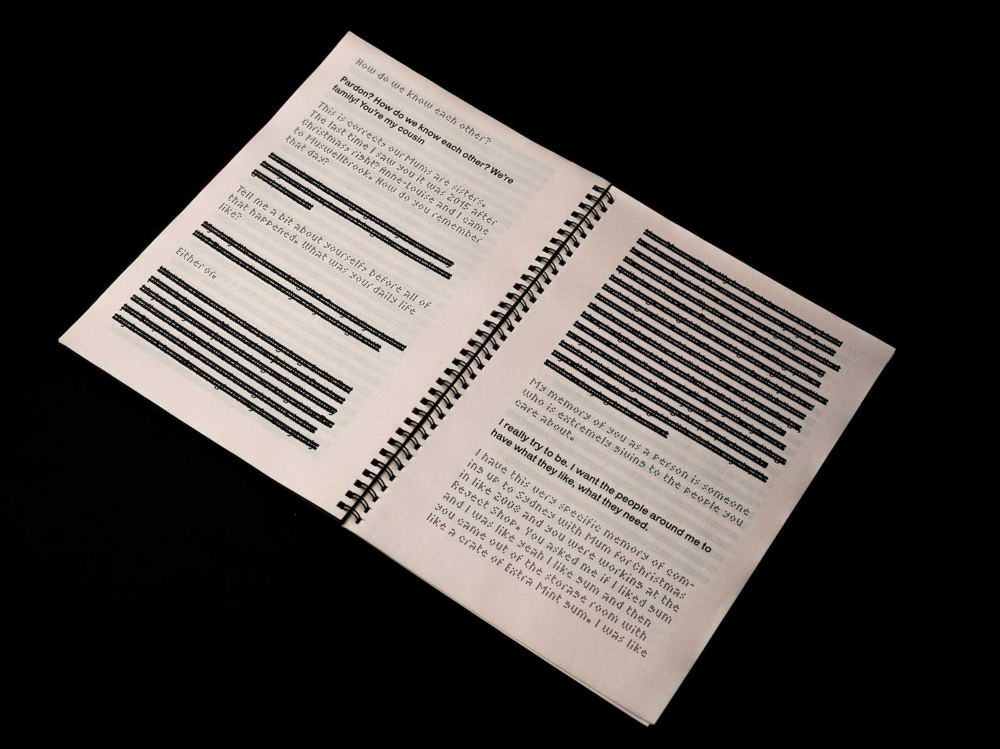
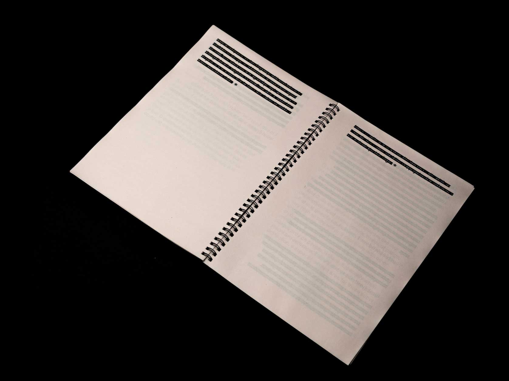
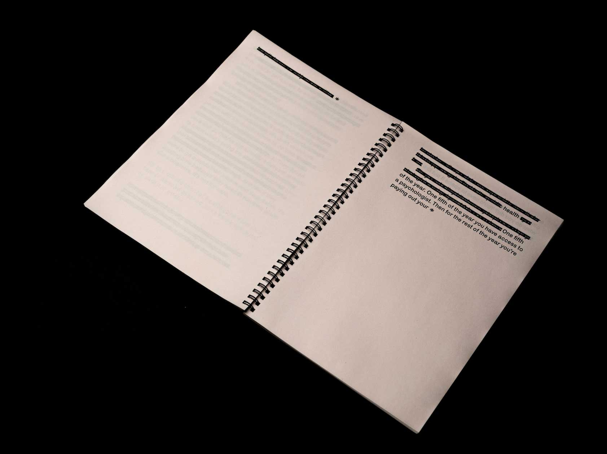
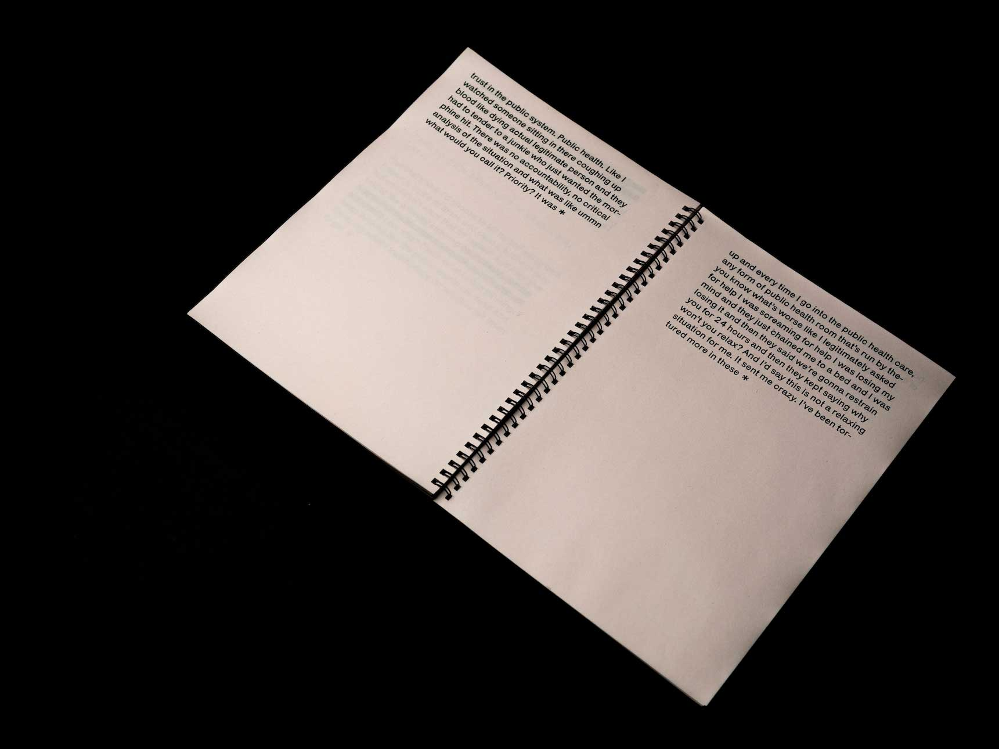
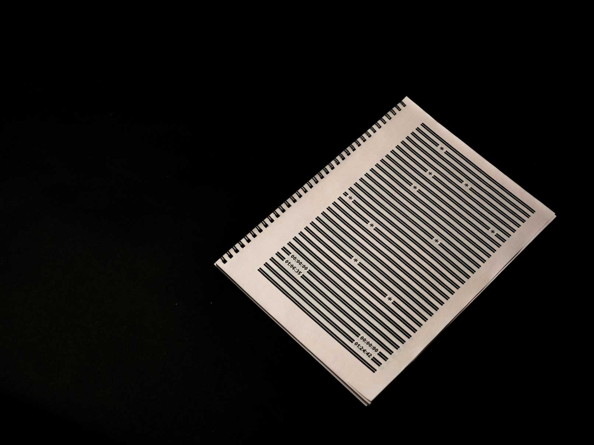
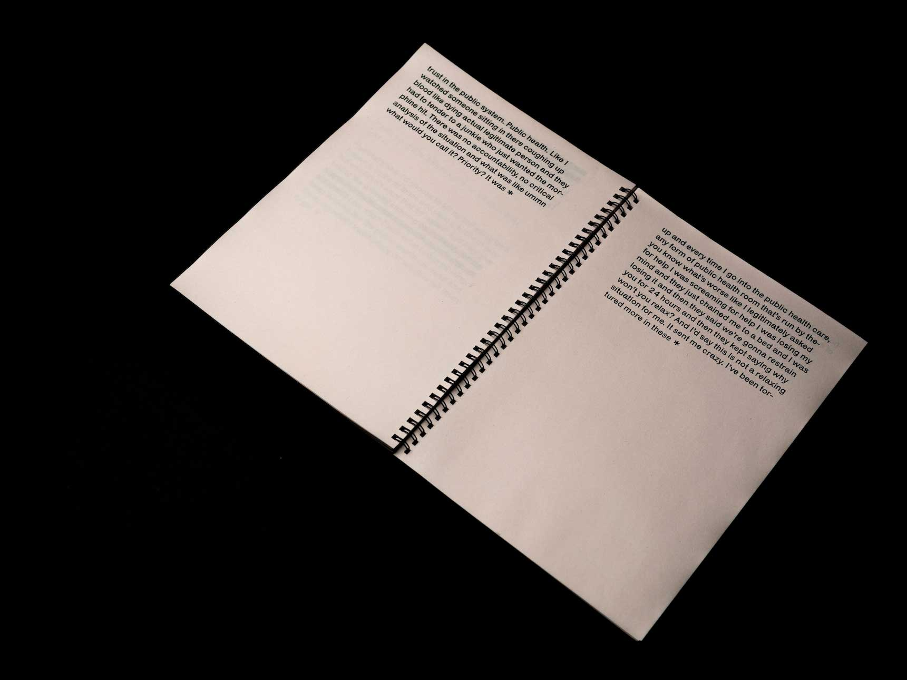
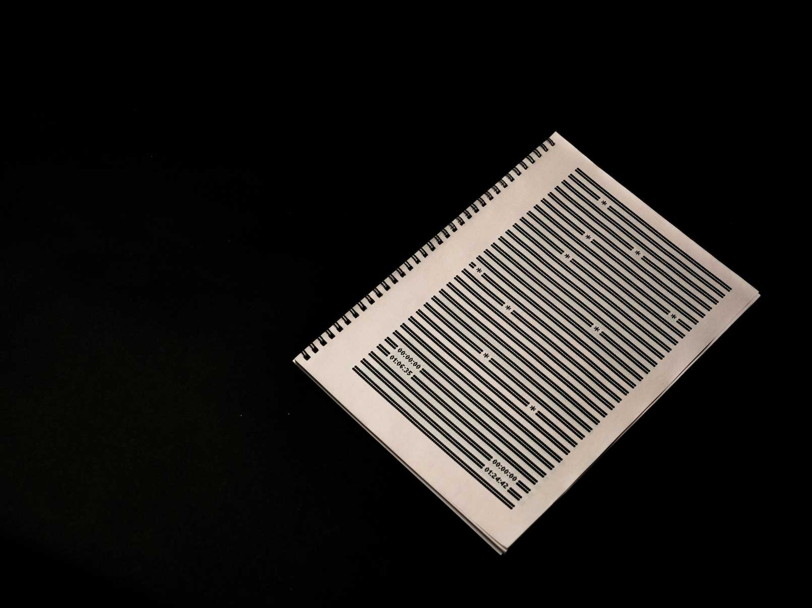

Redact is a revist of a past interview project. The book deals with themes of drug abuse and the prison system, and traces the state of the subject through page breaks and omissions. 118 pages, 46gsm newsprint. Laser printed, spiral bound.
   



The Glory! is an analysis of the Moscow 1980 Summer Olympic Games according to the 'pleasure-zone' as outlined in Learning From Las Vegas (1972). It traces how graphic design can service (or hinder) the state within environments that are declared ‘apolitical’. Diploma essay at BHSAD
An accepted proposal for the catalogue to celebrate 10 years of Strelka Press. 594 ☓ 420 mm, 90gsm Fluo Poster by Robuskin. UV printed, manually folded.


A response to Neil McGuire's brief found in Taking a Line for a Walk: 'Surprise: Design and make a book from any material that couldn't/wouldn't/shouldn't be used to make a book'. The book repurposes invoices and holds chapter 4 of Guy Debord's 'The Society of the Spectacle'.
An accepted animation strategy for Tsaritsyno Museum-Reserve to be used on their digital content.
Trisha Kay Patas is an American youtube personality, characterised by her stripped-back editing style and raw production. This bot developed using Python attempts to predict her titles and thumbnails. Maybe one day she might even get it right. You can explore the feed here.


CMYK screenprint of a distant image

Commissioned work for DVD Gallery's first show. Made using Python on DrawBot.

'It's not the script for a film' deals with a story very far from home, and tries to bridge (or bring attention to) the gap between two places I have strong ties to.
Poster made for the BHSAD Film Club's screening of Drop Dead Goregeous (1999)

3 layer screen print exercise looking at making from memory


Girl is a visual analysis of Kim Gordon’s 2015 memoir ‘Girl in a Band’, playing off the visual and tactile elements of the second edition. 288 pages, 80gsm Munken pure rough. Inkjet printed, perfect bound.

An indexing of Chris Marker's 1986 experimental film Sans Soleil. Here, the film is catalogued chronologically according to Sergei Eisenstein's Soviet Montage Theory, where each still is positioned on the page according to the strategy used by Marker. 194 pages, 90gsm Luminart white. Inkjet printed, swiss bound.


A face filter for when you need a hand. Try it here!

Not much to say really. During research for a karaoke related brief, I found myself asking 'what would the karaoke versions of the top 9 songs of 2008 sound like played at once?'. It's here because I want you to see it.